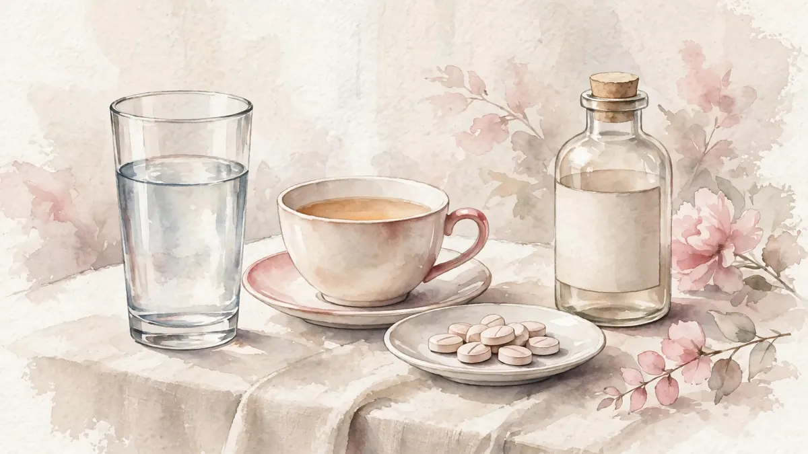
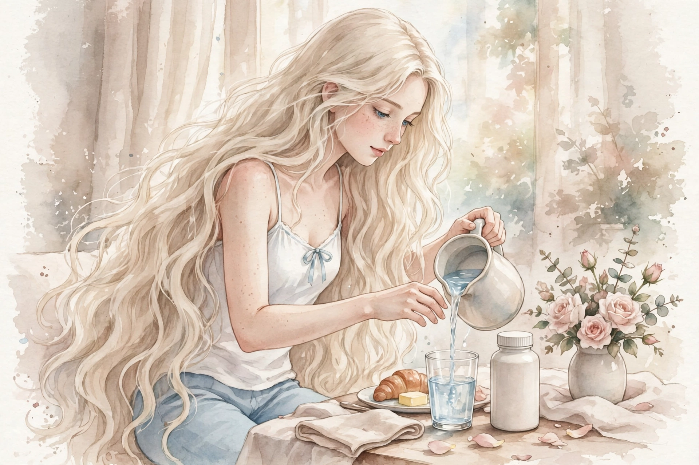

トップ ＞ インナーケア・サプリ ＞ 一緒に飲む飲み物の案内の読み方
一緒に飲む飲み物の案内の読み方

サプリメントの飲み方の案内には、「水またはぬるま湯と一緒にお召し上がりください」という文言がよく見られます。当たり前に読み流してしまいがちですが、この一文にも読みどころがあります。この記事では、一緒に飲む飲み物にまつわる案内文の読み方を整理します。
基本の案内文と、水の量
粒やカプセルを飲む場合の基本は、水と一緒に飲むことです。案内文には「コップ1杯の水と一緒に」のように、水の量まで書かれていることがあります。量の案内がある場合は、それがその商品の前提です。少量の水で流し込む飲み方ではなく、案内の量を目安にしてください。
「ぬるま湯」と書かれている場合は、温度にも案内があるということです。熱いお茶など、温度の高い飲み物との組み合わせは、案内文の範囲で判断します。文言は短くても、「何と・どれくらい・どの温度で」という情報が含まれています。
飲み物について、個別の案内がある場合
商品によっては、特定の飲み物と一緒にしないよう案内されているものや、粉末タイプで「水や牛乳などに溶かして」と溶かすものが指定されているものがあります。これらは商品ごとの案内なので、自分の商品の表示にそうした文言があるかを確認してください。
服薬中の方は、薬を飲むときの飲み物についての案内が別にあります。サプリメントの案内文と薬の案内は別の話として扱い、薬については医師や薬剤師の指示に従ってください。
習慣の飲み物と合わないときは
朝食のコーヒーやお茶と一緒に飲む習慣の方も多いと思います。その習慣と商品の案内文が合うかどうかは、表示を読んで判断します。案内に制限がなければ、生活の流れに置くことが続けやすさにつながります。
判断に迷う場合は、水と一緒に飲むのが基本です。水は、どの案内文でも中心に置かれている飲み物です。飲み物の案内は、目安量の欄の近くに書かれていることが多いので、買ったときに一度、目安量とセットで読んでおくことを勧めます。
「飲む直前に用意する」という段取り
飲み物の案内を生活に落とし込むには、段取りを決めておくのが有効です。食卓にコップと水を用意する動作を、食事の支度の一部にしてしまうのです。サプリメントを食卓の近くに置く工夫と組み合わせれば、「何で飲むか」で迷う場面はほとんどなくなります。
粉末を溶かすタイプでは、溶かす飲み物の温度や量で、溶け残りの出方が変わることがあります。案内に「少量の水で溶かしてから」といった手順が書かれている場合は、その手順が前提です。自己流の作り方に変える前に、まず案内通りの手順を試してください。飲み物の案内は、目安量や保管の表示と同じく、その商品の使い方の説明書の一部です。買ったときに一通り目を通す習慣を勧めます。
外出先では、水の確保が難しい場面もあります。水なしで口にできるタイプかどうかは、形状と案内文で確認できます。水が必要なタイプを持ち出す場合は、飲み物を買う場所まで含めて段取りを考えておくと、飲み忘れが減ります。
飲み物の温度については、案内文に「熱いものと一緒にしない」といった注意が添えられている商品もあります。お茶やコーヒーの温度で飲む習慣のある方は、自分の商品にそうした案内がないかを、一度確認してください。
水の量と温度、飲み物の種類。この3点は、目安量と同じ欄にまとめて書かれていることが多いため、買ったときの読み合わせで一度に確認できます。表示の一文を、自分の習慣と照らす作業が、案内文の読み方の中心です。迷ったときの基本は、常温の水と一緒に、です。コップ1杯の水を用意する動作を、飲む段取りの最初に置いてください。

セラフィナ「何で飲むかも、表示に書いてあることがあるんだね。水が基本だよ」

セラフィナ｜美容の道具箱の案内役
「量と表示が分かれば、美容は失敗しない。」——セラフィナと白猫のモコが、買う前のチェックポイントを案内します。綺麗になりたい気持ちに正直に、でも表示は冷静に読むのが、このサイトの約束です。